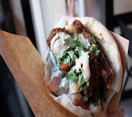

Food in Israel
1. Sfenj
A Maghreb dish originating from Morocco and northwest Africa, sfenj is Israel's answer to doughnuts. They're one of the most popular street foods in the country, with traders standing behind huge barrels of oil full of sizzling, crisp sfenj. They're made from a simple unsweetened dough that's left to rise before being shaped into rings or discs and deep-fried then dusted with sugar. Sfenj need to be eaten straight after cooking, or they lose their famous texture, so they're always best when eaten on the street.
2. Falafel
Falafel is Israel’s national dish, and if you’re a fan of these famous chickpea fritters then you’ll not go hungry. Falafel are eaten across the Middle East and most Arab countries, and the dish’s origins border on the mythical – many different countries claim to have invented them, although most records indicate they originally came from Egypt. Wherever falafel comes from, it has been fully adopted into Israeli cuisine, and is a daily staple for many. When it comes to street food falafel, they’re usually stuffed into pitta bread with plenty of hummus, tahini sauce, pickles and salad, with fresh tomatoes and fried aubergine adding even more flavour. If there’s one thing you need to eat while in Israel, it’s this.
3. Hummus
If falafel is Israel’s national dish, then hummus has to be a close second. While we tend to think of it as a dip, in Israel hummus can play any role – including a main meal in itself. Locals will all have their own favourite places to get hummus, and it’s as talked about as anything else in Israel, but any you try in the country will be far better than what you get in British supermarkets. The basic combination of chickpeas, tahini, garlic and lemon is tasty enough on its own, but there are many variations. Some include cumin, many are sprinkled with sumac and others are topped with pine nuts; there’s even hummus with fried ground meat on top. It might sound a little strange, but hummus is traditionally eaten with large slices of raw, sweet onion, which are dunked like a piece of pitta – delicious.
4. Khachapuri
It might be Georgia’s national dish, but khachapuri has fast become one of Israel’s most popular dishes for breakfast and brunch on the go. The large Georgian-Israeli community are responsible for some of the best bakeries in the country, and it’s thanks to dishes like these that they’re held in such high regard. A simple pastry shaped a little like a boat, khachapuri is stuffed with plenty of cheese and topped with a fried egg. It’s cheap, very tasty and perfect for a lazy start to the weekend. Vendors tend to offer a variety of toppings in Israel, too, filling the pastry with beans for a vegan option or going all-out with prawns, squid and garlic butter.
5. Shakshuka
Tunisian in origin, shakshuka (which translates to ‘shaken’ in Hebrew and ‘a mixture’ in Arabic) is a popular dish in Israel, especially at night (falafel and hummus are more associated with lunch). It’s quite a simple recipe – eggs are poached directly in a tomato sauce that’s (usually) flavoured with chillies, peppers, onions and cumin. However, when it’s cooked by a shakshuka master, all the different elements meld into one another to create a beautiful one-pot dish that is greater than the sum of its parts. Every street food stall and restaurant will follow their own unique recipe for the dish, believing it to be the best – the only way you’ll find out which one you like is if you eat at as many as you can.
6. Burika
Burika has to be one of Israel’s best-kept foodie secrets. Originally from North Africa, it’s been transformed into a street food snack that simply cannot be missed. A thin, savoury crêpe is filled with mashed potato and egg before being deep-fried until crisp. It’s then stuffed inside a pitta with hot sauce and salad, to be eaten as you walk around the markets. The combination of fluffy pitta, crisp pancake, soft potato, rich egg and fresh vegetables is something to behold.
7. Ful
Hummus certainly deserves its worldwide status, but it sometimes means dishes like ful don’t get the recognition they deserve. Think of it as hummus made with fava beans instead of chickpeas – it’s usually chunkier with an earthier flavour, containing more cumin and topped with fresh herbs, onion and chillies. It’s originally Egyptian and has made its way across the Arab world, including Israel. If you’ve hit your hummus limit while in the country, give ful a try.
8. Sabich
Israelis will happily stuff anything they can into a pitta, but while falafel, burika and shawarma are commonplace, sabich is the one that is arguably most representative of the country’s history. It was originally a dish eaten by Iraqi Jews on Shabbat morning, but has now become a popular daily staple. The pitta is stuffed with fried aubergine slices, hard-boiled eggs, tahini sauce and Israeli salad, which is a combination of finely diced cucumbers, tomatoes, onion and peppers.
9. Babka
If you get the chance to watch someone who has made babka a thousand times over, you can’t help but be mesmerised by the way they roll, twist and combine ropes of dough to create the final loaf. It comes from eastern Europe, particularly Poland (babka means small grandmother in Polish), and is essentially a sweetened yeast cake flavoured with spices and chocolate, topped with a honey-flavoured syrup. They were brought to Israel by eastern European Jews, and proved an instant hit – you can now pick up a slice of this deliciously textured loaf in markets across the country.